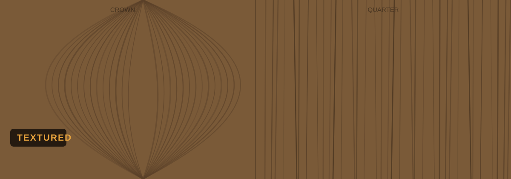

Crown & Quarter Cut · Mohali Gallery
Also searched as: textured veneer, brushed veneer, 3d veneer

See current sheets on WhatsAppTextured veneers add a tactile, brushed surface you can feel — the natural grain raised for depth, bringing walls and shutters to life.
Flowing, cathedral-like grain — dramatic and natural. The popular choice for feature walls and statement panelling.
Straight, uniform stripe — clean and formal. Ideal for wardrobes, doors and a more tailored, consistent look.
Every veneer sheet is unique — we'll photograph current Textured stock so you choose the exact figure you love.
Ask rate & see sheetsYes — we stock Textured veneer in both crown cut (flowing cathedral grain) and quarter cut (straight, uniform grain) at our Mohali gallery. WhatsApp +91 76964 49897 to see current sheets.
Textured veneer is used for feature walls, wardrobes, doors, panelling and premium furniture. Every sheet is unique — visit our gallery to pick yours.
Crown cut shows a flowing, cathedral-like grain pattern; quarter cut gives a straight, uniform stripe. Each species is available in both so you can match your design exactly.
Veneer pricing depends on figure, cut and sheet size. Share your requirement on WhatsApp and we'll quote today's rate.